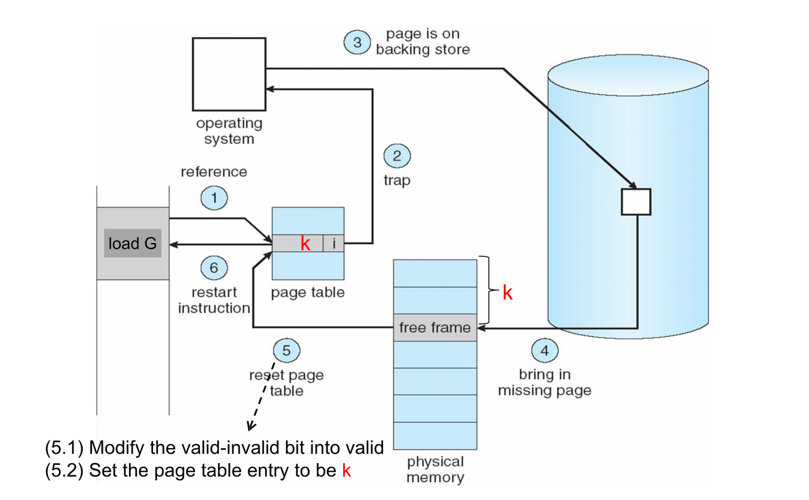
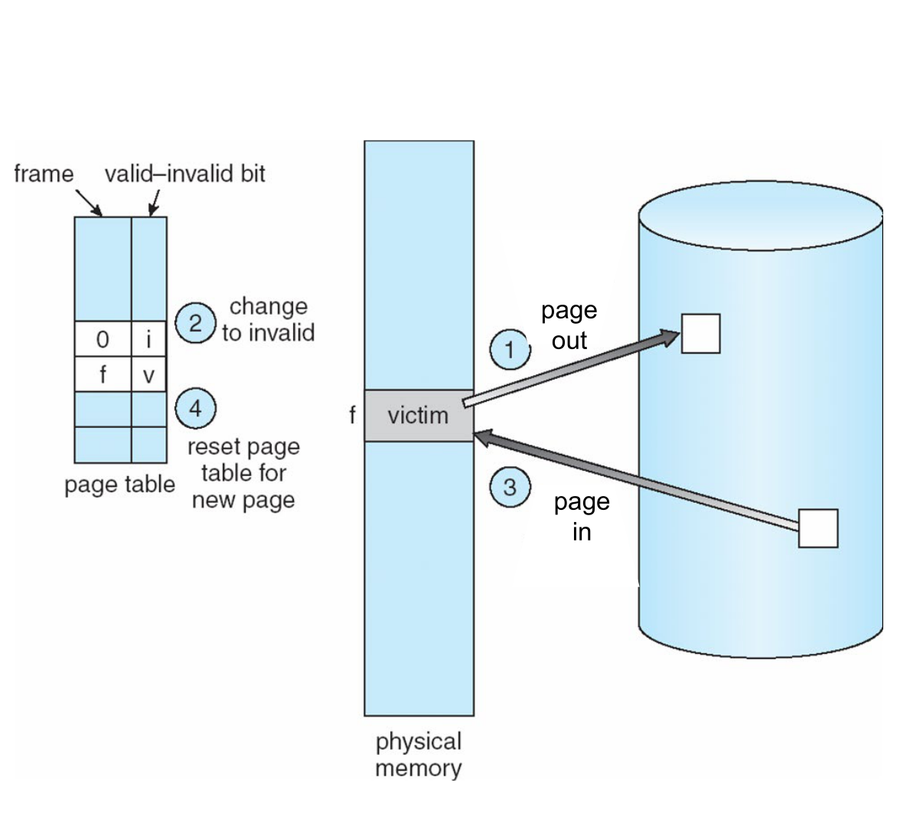
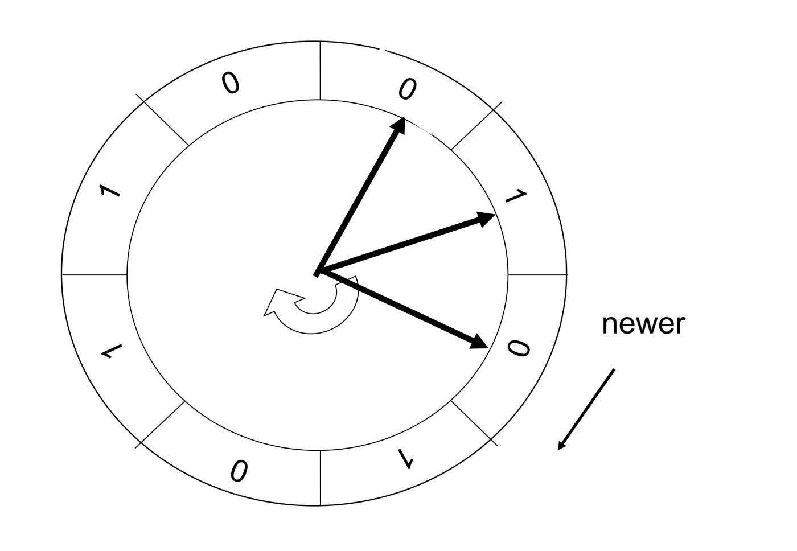
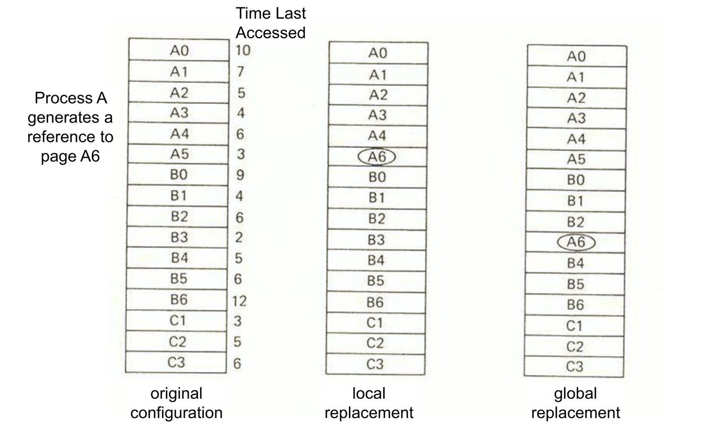
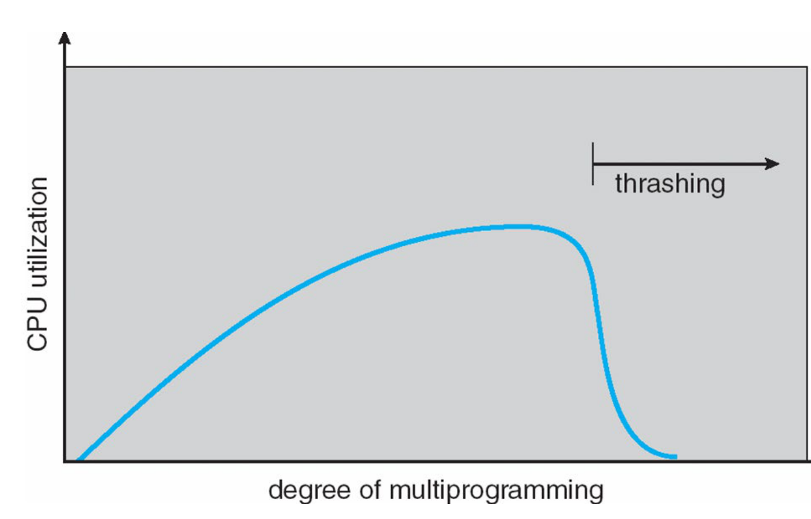

Virtual memory separates logical memory from physical memory. Under demand paging, only the active pages of a process reside in physical frames, allowing processes to exceed the size of physical RAM, increasing the degree of multiprogramming, and minimizing I/O latency during process startup.

1. Demand Paging
In a demand-paging architecture, pages are loaded lazily: a page is brought into physical memory only when an executing instruction references it.

Valid-Invalid Bit & Page Fault Handling
Each page table entry includes a valid-invalid bit:
- Valid (
v): The page is legal and currently resident in physical memory (the entry holds its frame number). - Invalid (
i): The page is either illegal or currently resides on the backing store. Initial page table entries are set toi.

When a process references an invalid entry, the hardware memory management unit (MMU) triggers an internal CPU trap known as a page fault.

[Instruction Access] ──> MMU checks Page Table ──> Entry marked invalid ('i')
│
┌────────────────────── Page Fault Trap Handled by OS ─────┘
│
├─ 1. Trap to kernel; save user process state and registers.
├─ 2. Validate memory address against internal process PCB metadata.
├─ 3. Locate requested page block on secondary storage (backing store).
├─ 4. Allocate a free physical frame (via free-frame list or page replacement).
├─ 5. Issue disk I/O to read page into allocated frame (process placed in Wait state).
├─ 6. On I/O interrupt, update page table: assign frame number, set bit to valid ('v').
└─ 7. Restore process state and RESTART the faulting instruction.Key Invariant: A TLB hit guarantees the page is resident in memory (
valid), because eviction always flushes matching TLB entries. A TLB miss can resolve in two ways: either a valid page table hit (page in RAM, TLB updated), or a page fault (page on disk).
Effective Access Time (EAT)
Secondary storage transfers operate on millisecond timescales, whereas main memory operates in nanoseconds. The performance penalty of page faults dominates memory hierarchy latency:
Where:
- : Memory access time ().
- : Page fault probability ().
- : Includes trap overhead, disk read latency, and instruction restart ().
To maintain memory degradation below , must remain strictly below ( fault per 100,000 memory references).
2. Page Replacement
When a page fault occurs and physical memory contains no free frames, the OS must evict an existing resident page (victim frame) to the backing store.


The Dirty (Modify) Bit vs. Reference Bit
To prevent redundant disk write cycles, hardware page tables track page modifications:
- Dirty (Modify) Bit: Set to
1by hardware whenever a memory write occurs within the page.- If victim is clean (
0): It matches its backing store copy and is discarded immediately without I/O. - If victim is dirty (
1): It must be written back to disk (page-out) before allocating the frame (page-in), doubling fault transfer overhead.
- If victim is clean (
- Reference (Use) Bit: Set to
1by hardware whenever the page is read or written. Used strictly by replacement algorithms to estimate recency of use.
AY18/19 S1 Q3a(ii): If a page fault occurs and there is no free frame available, two page transfers, one in and one out, must be performed.
False. A two-page transfer (page-out followed by page-in) is required only if the victim page is dirty. If the victim is clean, its contents are discarded immediately and overwritten, requiring only a single page-in transfer.
AY17/18 S2 Q3a(v): If its reference bit is set, a page needs not to be written back to the backing store when being replaced.
False. The reference bit tracks whether a page was accessed to assist replacement policies. Write-back decisions depend exclusively on the dirty (modify) bit. A referenced page can be dirty, necessitating write-back.
3. Page Replacement Algorithms
Algorithms are evaluated on reference strings across fixed allocations of frames. For a reference string of length containing unique pages, total faults are bounded by . With frames, faults equal .

Consider the reference string:
1, 2, 3, 4, 1, 2, 5, 1, 2, 3, 4, 5
().
First-In, First-Out (FIFO)
Evicts the page residing in physical memory for the longest time based purely on its load timestamp. Memory access hits do not alter queue positions.
3 Frames (9 Faults):
4 Frames (10 Faults):
Allocating 4 frames yields more faults than 3 frames (10 vs 9). This is Belady’s Anomaly.
Optimal Algorithm (OPT / MIN)
Replaces the page that will not be used for the longest future period. Serves as an unrealizable theoretical lower bound on page faults.
- 4 Frames (6 Faults):
Least Recently Used (LRU)
Replaces the page that has not been referenced for the longest period. Uses past behavior as an approximation of future behavior. Access hits update the recency timestamp of the referenced page.
- 4 Frames (8 Faults):
LRU implementation mechanisms:
- Counters / Logical Clock: CPU writes the incrementing clock register into the page table entry on every access. Eviction requires an search for the minimum timestamp.
- Stack (Doubly Linked List): On access, the referenced page entry is detached and moved to the stack top. The stack bottom always holds the LRU victim. No searching is required, but pointers must be updated on every single memory reference.
Clock (Second-Chance) Algorithm
A hardware-assisted approximation of LRU. Frames are organized in a circular queue managed by a traversing pointer (“hand”).

- On Hit: Hardware sets the page’s reference bit . Pointer does not move.
- On Fault:
- If page under pointer has : Select as victim, load new page, advance pointer by 1.
- If page under pointer has : Clear bit (), give it a “second chance”, advance pointer to inspect next frame.
- Course Convention: Newly loaded pages initialize with .
- Degeneracy: If all resident pages have , the pointer completes a full cycle clearing all bits to and evicts the original starting frame. In this worst-case scenario, Clock degrades to FIFO.
AY18/19 S2 Q3d(ii): Under what situation will the clock algorithm behave like the First-In-First-Out (FIFO) algorithm?
When all resident frames have their reference bits set to 1. The clock pointer traverses all frames, clearing every reference bit to 0 without finding an eviction candidate, and ultimately evicts the frame where the traversal began (the oldest loaded frame).
AY15/16 S2 Q3d: Cyclic reference string under FIFO, LRU, and alternative algorithms
Given 4 empty frames and cyclic reference string
0, 1, 2, 3, 4, 5, 0, 1, 2, 3, 4, 5:
(i) FIFO Faults: 12. There are 6 distinct pages
cycling across 4 frames. After the initial 4 compulsory faults
(0, 1, 2, 3), reference 4 evicts
0, 5 evicts 1, 0
evicts 2, and so forth. Every single reference accesses the
exact page that was just evicted.
(ii) LRU Faults: 12. In a strict cyclic access sequence where distinct pages exceed frame capacity (), the least recently used page is always the immediately requested next page.
(iii) Realistic alternative design: Most Recently
Used (MRU). By evicting the most recently used frame,
MRU preserves the first 3 resident frames (0, 1, 2) and
cycles the 4th frame for incoming pages (3, 4, 5), yielding
only 8 faults (matching OPT).
4. Belady’s Anomaly & Stack Algorithms
Belady’s Anomaly: For certain page replacement algorithms, increasing the number of physical frames increases the total number of page faults.
The Inclusion Property
An algorithm belongs to the class of stack algorithms if the set of pages resident in an -frame allocation is always a strict subset of pages resident in an -frame allocation:
- OPT and LRU satisfy inclusion: The set of most recently used pages is inherently contained within the set of most recently used pages. Stack algorithms can never exhibit Belady’s anomaly.
- FIFO violates inclusion: Queue residency depends on load time rather than reference recency, causing divergent residency sets when frame counts change.
- Clock violates inclusion: Hand position and bit reset patterns diverge across different buffer sizes, allowing Clock to suffer from Belady’s anomaly.
AY18/19 S1 Q3d: Belady’s anomaly definition and LRU immunity
(i) Definition: Belady’s anomaly occurs when increasing the number of allocated physical frames results in an increased number of page faults for a given reference string.
(ii) LRU Immunity: LRU does not suffer from Belady’s anomaly because it is a stack algorithm satisfying the inclusion property. The frames allocated under LRU always contain the most recently referenced pages, which are guaranteed to be a subset of the most recently referenced pages.
AY16/17 S1 Q3a(iv): As the number of available page frames increases, the number of page faults will always decrease no matter which page replacement algorithm is used.
False. Due to Belady’s anomaly, algorithms that do not satisfy the inclusion property (such as FIFO) can experience an increase in page faults when more frames are allocated.
5. Frame Allocation & Replacement Scope
Physical frames can be allocated to processes via two baseline policies:
- Equal Allocation: Memory of frames distributed across processes: frames per process.
- Proportional Allocation: Memory allocated based on process virtual memory size :

Replacement Scope
- Local Replacement: When process faults, it selects a victim strictly from its own allocated frames. Process frame counts remain constant.
- Global Replacement: The victim frame can be selected from any process in memory. Frame counts dynamically drift based on execution demand.

| Frame Allocation Policy | Local Replacement | Global Replacement |
|---|---|---|
| Fixed Allocation | Permitted | Impossible (evicting another process’s frame alters fixed allocations) |
| Variable Allocation | Permitted | Permitted |
Universal Rule: Fixed frame allocation requires local replacement. Variable frame allocation can use either local or global replacement.
AY16/17 S1 Q3a(vi) & AY18/19 S1 Q3a(iii): Replacement scope under variable frame allocation
“Both local and global page replacement policies can be used under variable frame allocation.” — True. Variable frame allocation does not dictate the replacement scope: an OS can dynamically adjust allocations based on working set boundaries (local) or permit processes to evict frames across process boundaries (global).
AY17/18 S1 Q3a(v): The fixed frame allocation policy can only use the local replacement policy.
True. If a fixed allocation scheme adopted global replacement, evicting another process’s frame would mutate both processes’ frame counts, violating fixed allocation.
6. Thrashing
Thrashing occurs when a process spends more time paging (swapping pages into and out of memory) than executing instructions.

The Vicious Feedback Loop
- Active processes do not hold enough frames to satisfy their current working localities.
- Page fault rates surge; processes enter the I/O wait queue waiting on the paging device.
- CPU utilization drops because all processes are blocked waiting for disk transfers.
- The OS scheduler mistakes low CPU utilization for system under-utilization and increases the degree of multiprogramming.
- New processes steal frames from existing processes, causing further page faults. CPU utilization plummets to near zero.
Insufficient Frames ──> Page Fault Rate Surges ──> Processes Blocked on Disk
▲ │
│ ▼
CPU Utilization Drops <── OS Adds More Processes <── CPU Scheduler MisinterpretsRemediation Strategies
- Effective Remedies:
- Decrease the degree of multiprogramming: Swap out entire processes from memory to free frames for remaining processes.
- Add physical memory (RAM): Expands total available frames .
- Ineffective / Detrimental Actions:
- Faster CPU: Completely ineffective; the CPU is already idle waiting on disk transfers.
- Increasing multiprogramming: Directly accelerates thrashing collapse.
AY16/17 S1 Q3a(v) & AY17/18 S2 Q3a(vi): Thrashing detection and mitigation
- AY16/17 S1 Q3a(v): “Thrashing can be temporarily alleviated by swapping out some processes.” — True. Swapping out processes frees their frame pools, providing sufficient frames for remaining processes to satisfy their localities without faulting.
- AY17/18 S2 Q3a(vi): “Thrashing can be detected by evaluating the level of CPU utilization as compared to the level of multiprogramming.” — True. A drop in CPU utilization concurrent with high multiprogramming and continuous disk paging queues indicates thrashing.
AY19/20 S1 Q3a(v): Using demand-paging increases the degree of multiprogramming and hence always improves CPU utilization.
False. While demand paging enables higher multiprogramming initially, raising it past physical memory capacity starves processes of their localities, triggering thrashing where CPU utilization collapses.
AY15/16 S2 Q3c: Thrashing definition, causes, and prevention strategies
- Meaning: A condition where processes spend virtually all of their time paging (transferring pages between memory and backing store) rather than executing productive CPU instructions.
- Root Cause: A process is allocated fewer frames than required by its current locality of reference. As a result, page faults occur continuously, forcing CPU utilization to collapse and inducing the OS to inject even more processes.
- Prevention Strategies:
- Working Set Model: Allocate each process sufficient frames to house its working set size . If total demand , suspend (swap out) a process.
- Page Fault Frequency (PFF): Establish upper and lower page fault thresholds per process, dynamically allocating frames when rates exceed the ceiling and reclaiming frames when rates fall below the floor.
AY18/19 S2 Q3e: Impact of physical memory, multiprogramming, and secondary storage latency
- Physical Memory Size: Expanding physical RAM directly increases the total frame pool, allowing more pages of active localities to reside in memory, drastically reducing page faults.
- Degree of Multiprogramming: Increasing multiprogramming raises CPU utilization up to the system’s memory capacity. Beyond this tipping point, processes starve for frames, triggering thrashing and collapsing utilization.
- Secondary Storage Latency: Page fault service time is dominated by disk transfer latency. Increasing disk latency escalates page fault penalty by orders of magnitude, catastrophically increasing Effective Access Time (EAT).
7. Locality and Memory Access Patterns
Programs execute according to the locality model: execution moves through a sequence of shifting localities over time.
- Temporal Locality: Memory referenced currently will likely be referenced again soon (e.g., loop counter, accumulator).
- Spatial Locality: Memory adjacent to current references will likely be referenced soon (e.g., array scans, sequential code blocks).
Data Structure & Loop Traversal Impact
C arrays are laid out in memory in row-major order
(row by row). Consider int a[1024][1024] (each row is
):
// Code Fragment A (Row-major: Optimal Spatial Locality)
for (int i = 0; i < 1024; i++)
for (int j = 0; j < 1024; j++)
a[i][j]++; // Stays within one 4KB page for 1024 consecutive iterations
// Total faults: <= 1024 compulsory page faults.
// Code Fragment B (Column-major: Destroys Locality)
for (int j = 0; j < 1024; j++)
for (int i = 0; i < 1024; i++)
a[i][j]++; // Jumps to a new row (new page) on EVERY single inner access
// Total faults: Up to 1,024 * 1024 = 1,048,576 faults if frames < 1024!Similarly, arrays exhibit high spatial locality because elements reside contiguously within pages. Linked lists exhibit poor spatial locality because dynamically allocated heap nodes can be scattered across non-contiguous pages.
AY16/17 S1 Q3c: Impact of arrays vs. linked lists in demand paging
An array occupies a contiguous block of memory. Consecutive element accesses benefit from strong spatial locality, traversing entire pages with minimal compulsory faults. A linked list allocates nodes dynamically in heap storage, scattering them across arbitrary pages. Traversing list pointers frequently faults across distinct pages, inducing significantly higher page fault overhead.
AY17/18 S2 Q3c: Loop nesting and locality analysis
(i) Locality: The behavioral property where a program references a localized cluster of pages over a period of time, composed of temporal locality (re-referencing the same locations) and spatial locality (referencing adjacent locations).
(ii) Left vs. Right Fragment: The left
fragment (i outer, j inner) exhibits
superior locality. Because C arrays are stored in row-major order, the
inner loop processes elements of row i sequentially within
the same page. The right fragment (j
outer, i inner) jumps across 1,024 distinct rows on each
iteration, striding across 1,024 different pages and causing massive
page faults.
8. Working Set Model & Page Fault Frequency
Working Set Model
The working set window defines a fixed sliding parameter of memory references.
- Working Set at time (): The set of unique pages referenced in the past time units.
- Working Set Size (): The number of unique pages in process ’s working set.

Total memory demand across all active processes is:
- If (total frames): Demand exceeds physical capacity; thrashing is imminent. The OS suspends (swaps out) a process and reclaims its frames.
- Window size
tuning:
- too small: Fails to encompass the entire active locality, inducing high fault rates.
- too large: Spans across past and future localities, over-allocating frames and lowering multiprogramming.
Page Fault Frequency (PFF) Strategy
A direct, adaptive feedback mechanism tracking actual per-process page fault rates.

- Fault rate Upper Threshold: Process is starved of frames; allocate an additional physical frame to the process (if no frame is free, swap out another process).
- Fault rate Lower Threshold: Process holds surplus frames; deallocate a frame from the process to prevent memory waste.
AY18/19 S1 Q3e: Working set window parameter Δ trade-offs
- too small: The working set window underestimates process locality. Each process is allocated too few frames, causing page fault frequency to be high, while the degree of multiprogramming in memory remains artificially high.
- too large: The working set window spans across multiple obsolete localities. Each process is allocated surplus frames, driving page fault frequency low, but restricting physical memory capacity so the number of processes supported in memory is low.
9. Comprehensive Address Translation & Replacement Problems
AY17/18 S2 Q3b: 12-bit logical address, fixed allocation, LRU vs FIFO fault trace
Given: 12-bit logical address, page size = 1024 bytes (), physical memory = 8 frames (), 3 frames allocated to process.
| Page number | Frame number | Valid bit | Time loaded | Time last accessed |
|---|---|---|---|---|
| 0 | 2 | 1 | 120 | 200 |
| 1 | 7 | 1 | 150 | 160 |
| 2 | – | 0 | – | – |
| 3 | 4 | 1 | 140 | 180 |
(i) Physical address bits: .
(ii) Address translations: Page offset = 10 bits (). Page number = bits.
- Logical 1052: Page , Offset . Page 1 is valid in Frame 7. Physical address .
- Logical 2080: Page , Offset . Page 2 has Valid bit . Generates a page fault (no physical address translation).
(iii) Identify 3 consecutive references causing page faults under local LRU: The sequence 2, 1, 3 causes 3 consecutive page faults:
- Ref 2: Page 2 is missing (fault). Resident pages have access timestamps: Page 0 (200), Page 3 (180), Page 1 (160). LRU is Page 1 (160); Page 2 replaces Page 1 in Frame 7.
- Ref 1: Page 1 is now missing (fault). Resident pages: Page 0 (200), Page 3 (180), Page 2 (new). LRU is Page 3 (180); Page 1 replaces Page 3 in Frame 4.
- Ref 3: Page 3 is missing (fault). Resident pages: Page 0 (200), Page 2 (new), Page 1 (new). LRU is Page 0 (200); Page 3 replaces Page 0 in Frame 2.
(iv) Evaluation under FIFO: FIFO inspects Time loaded: Page 0 (120), Page 3 (140), Page 1 (150).
- Ref 2: Faults. Oldest loaded page is Page 0 (120); Page 2 replaces Page 0 in Frame 2.
- Ref 1: Hit! Page 1 is resident in Frame 7.
- Ref 3: Hit! Page 3 is resident in Frame 4. Resulting mapping: Page 1 Frame 7, Page 2 Frame 2, Page 3 Frame 4. (Only 1 fault generated).
AY19/20 S1 Q3d: 16-bit hex address sequence with LRU page replacement trace
Given: 16-bit logical/physical addresses, 4KB page size (, 4-bit page number / 1 hex digit), local LRU replacement across 4 allocated frames {1, 4, 8, 15}.
Initial page table:
- Page 1 Frame 1 (last ref: 268)
- Page 7 Frame 8 (last ref: 230)
- Page 10 (0xA) Frame 4 (last ref: 245)
- Page 12 (0xC) Frame 15 (last ref: 275)
(i) Offset bits: .
(ii) & (iv) Reference trace and address translations: Assign logical clock timestamps to sequential references:
| Tick | Logical Addr | Page | Resident? | Action / Frame Replacement | Physical Addr |
|---|---|---|---|---|---|
| 276 | 0x76F4 |
7 | Hit | Update Page 7 timestamp to 276 (Frame 8) | 0x86F4 |
| 277 | 0xB89F |
11 (B) | Fault | Evict LRU Page 10 (245) Page 11 into Frame 4 | 0x489F |
| 278 | 0x1A86 |
1 | Hit | Update Page 1 timestamp to 278 (Frame 1) | 0x1A86 |
| 279 | 0x6987 |
6 | Fault | Evict LRU Page 12 (275) Page 6 into Frame 15 | 0xF987 |
| 280 | 0x7E56 |
7 | Hit | Update Page 7 timestamp to 280 (Frame 8) | 0x8E56 |
| 281 | 0xD908 |
13 (D) | Fault | Evict LRU Page 11 (277) Page 13 into Frame 4 | 0x4908 |
Total Page Faults: 3.
(iii) Final Frame Allocation Column:
- Frame 1 Page 1
- Frame 4 Page 13
- Frame 8 Page 7
- Frame 15 Page 6